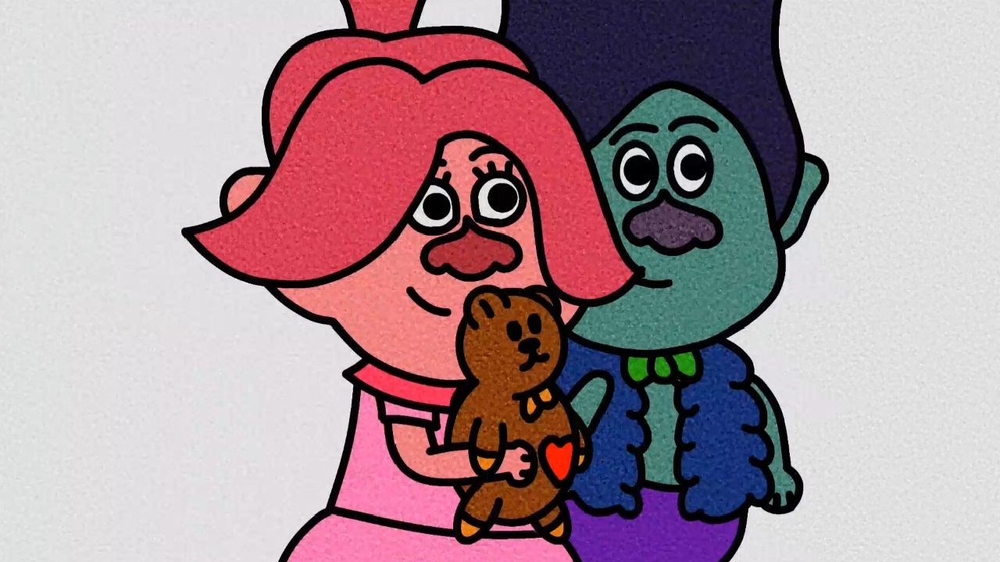

CONNECT WITH PEWJAY
Find your
creative corner.
Follow PewJay Official across social platforms for digital art, animation, livestreams, fandom updates, and creative projects.
Explore platforms
Opens in a new tab
SCROLL TO CONNECT

START HERE
Watch the ideas
come to life.
Visit the PewJay YouTube channel for videos, art process, and livestream moments from the creative desk.
Visit YouTube
CHOOSE YOUR CHANNEL
Let's connect somewhere.
Pick a platform and join the PewJay creative community.
CONNECT
Showing all 8 platforms